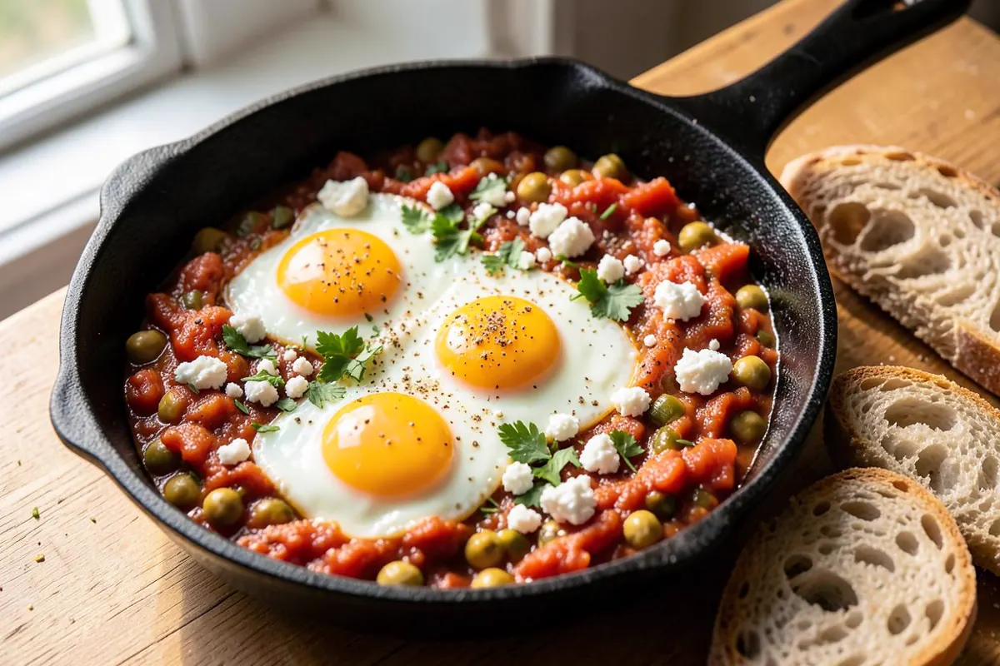

How to Pair Spices Without Following a Recipe

Spice pairing is not a list to memorise. It is a small number of families that work together, and a few rules about heat, fat and timing.
Four families cover most cooking
Almost every spice in the cupboard belongs to one of four groups. Warm and sweet: cinnamon, nutmeg, allspice, cloves. Earthy and savoury: cumin, coriander, paprika, turmeric. Sharp and bright: black pepper, ginger, mustard, chili. And aromatic and herbal: fennel, cardamom, dried oregano, bay.
A dish tastes balanced when it draws on two or three of those groups rather than one. Cumin and coriander alone are earthy and can taste flat; add paprika for sweetness and a squeeze of lemon, and the same spices suddenly read as a finished dish.
Heat, and the reason to bloom
Ground spices are fat-soluble, not water-soluble. Stirred into a wet sauce they stay suspended and taste dusty; cooked briefly in oil they release their aroma and the dish tastes seasoned rather than sprinkled. This is why so many recipes ask you to fry the spices for a minute before adding liquid.
The window is short. Thirty to sixty seconds over medium heat is usually right, and the signal is smell rather than colour. The moment the kitchen fills with the aroma, add the next ingredient. Garlic and ground spices left in hot oil for two minutes will turn bitter, and there is no way to take that back.
Building in layers
Restaurant cooking layers the same spice at different stages: some at the start for depth, some at the end for lift, and often a fresh version of the same flavour at the finish. A chili with cumin in the base and fresh cilantro on top tastes more complete than one with twice the cumin added at once.
Whole spices go in early, because they need time and heat to open up. Ground spices go in the middle. Delicate things like dried mint, sumac or garam masala go in at the end, off the heat, where their aroma survives.
A useful exercise is to cook the same simple dish three times with the same base and three different finishing spices. A pan of chickpeas with cumin, one with smoked paprika and one with fennel and lemon will taste like three different cuisines, and the experiment costs very little.
Salt, acid and fat are part of the pairing
A spice blend that smells wonderful in the jar can still taste dull in the pan if the dish is under-salted or has no acid. Salt opens up the aromatics; acid sharpens them; fat carries them. Before adding more spice to a flat dish, try a pinch of salt and a squeeze of lemon.
Fat is the reason the same spices taste different in a curry and a salad. Spices dissolved in ghee or oil coat the tongue differently from spices in a water-based sauce, which is why a dish can taste strongly of cumin when hot and of almost nothing when cold.
Texture is part of the same conversation. A dish that tastes flat is sometimes missing crunch rather than flavour, and a handful of toasted seeds or fried shallots will do more than another teaspoon of anything from a jar.
Ratios that keep you out of trouble
When building a blend, start with the earthy base at roughly double the amount of everything else, then add warmth at half that, and sharp or aromatic notes at a quarter. Two teaspoons of cumin, one of coriander, one of paprika, half a teaspoon of cinnamon, and a pinch of cayenne is a usable starting point that can go in almost any direction.
Taste as you go and write down what you used. The blend you liked is worth more than any recipe, and it is impossible to repeat if you cannot remember whether the extra spoon was coriander or cardamom.
When to stop adding
More spice does not mean more flavour. Past a certain point the spices compete and the dish tastes muddy, and the ingredient underneath disappears. If you can no longer taste the main ingredient, the balance is wrong, and the fix is usually more salt or acid rather than more spice.
The other thing worth knowing is that ground spices fade. A jar opened two years ago is not the same ingredient as a fresh one, and a recipe that tasted good last year may taste weak now for reasons that have nothing to do with your cooking.
Keep a note of what you used in the dishes that worked. Two lines on a phone is enough: the spice, the amount, and what it went into. After a month you will have a personal shorthand that is far more useful than a chart of pairings, because it is built from food you actually cooked and actually liked.
Buying and keeping spices
Buy whole spices where you can: cumin and coriander seed, peppercorns, fennel, cardamom. They keep their aroma for years rather than months, and toasting and grinding them takes a minute in a dry pan. A cheap electric grinder or a mortar is all the equipment needed.
Store ground spices away from the hob and out of the light. The shelf above the cooker is the worst place in the kitchen for them, since the heat and steam hasten exactly the decline you are trying to avoid. A closed tin in a cupboard is better.
Written by Kent B Williams for Hearth & Harvest. Questions or corrections are welcome at the contact page.